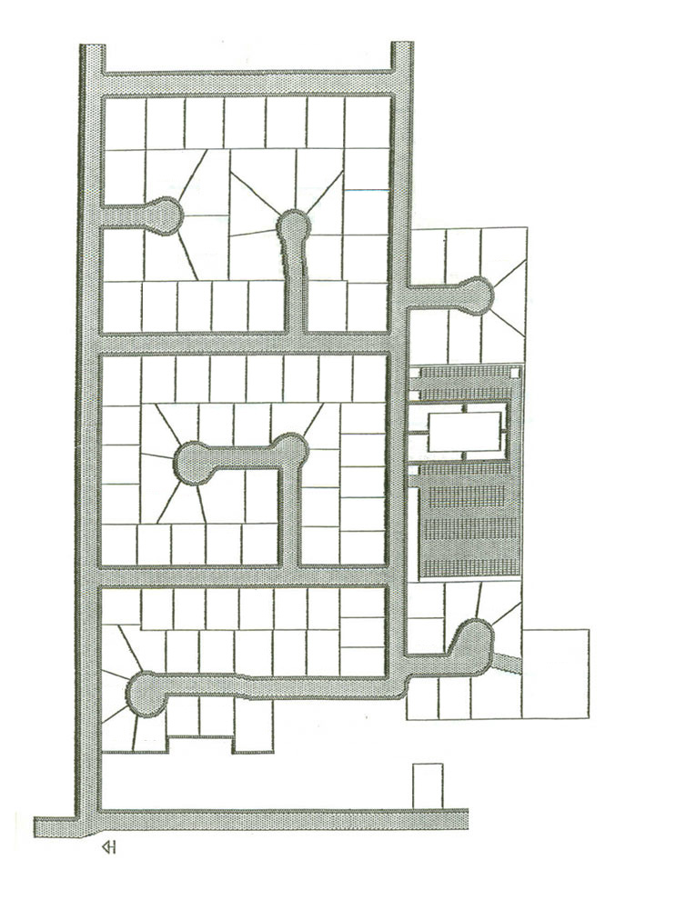

HTML_LABELS
980 West
1015 West
1035 West
1050 West
1080 West
1125 West
1160 West
1165 West
1200 West
1200 North
1140 North
1130 North
1100 North
Church
1075 W
WARD_NAME
Updated: GENERATED_DATE
A
(A) Aspen ward
S
(S) Spanish speaking
L
(L) Less-active
N
(N) Not a member
P
(P) Part-member
U
(U) Unknown